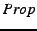
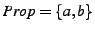

. For example, when
, (and therefore the number of variables is 2), the Promela model is:
/*File: 2vars.pml*/
bool A,B;
/* define an active procedure to generate values for A and B */
active proctype generateValues()
{ do
:: atomic{ A = 0; B = 0; }
:: atomic{ A = 0; B = 1; }
:: atomic{ A = 1; B = 0; }
:: atomic{ A = 1; B = 1; }
od }
We use the atomic{} construct to ensure that the Boolean variables change value in one unbreakable step. Note that the size of this model is exponential in the number of atomic propositions.
The variables in are defined in the accompanying file 2vars.define , which is prepended to the never-claim we are testing.
These two files are generated automatically for any given value of by any one of the following scripts. (Just for simplicity, there are 3 versions of the same script here.):
| Script Name | Variable Set | Recommended Input Formulas |
| generateValues.pl | Prop = a, b, c, ..., aa, bb, cc, ... | Use with random and counter formulas. |
| generatePvalues.pl | Prop = p1, p2, p3, ... | Use with pattern formulas. |
| generateAlphaPvalues.pl | Prop = po, pt, ph, ... | Use with pattern formulas, for tools |
| which don't allow numbers in variable names |
Usage:
generateValues.pl number_of_variables
Here is an example of how to use these scripts to run SPIN on a generated Promela never-claim with a universal model: